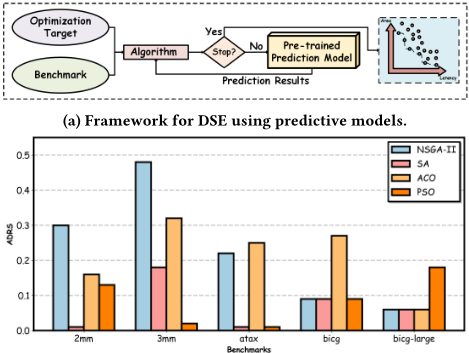
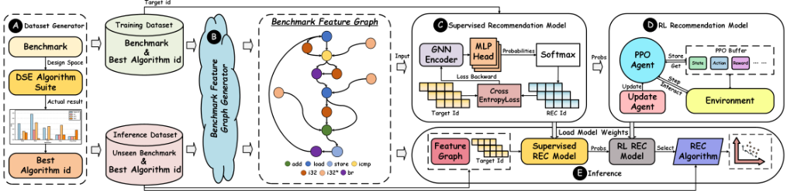
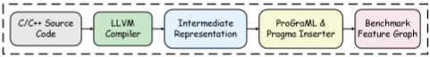
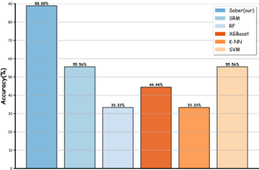
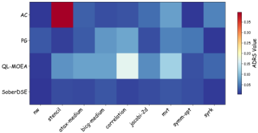
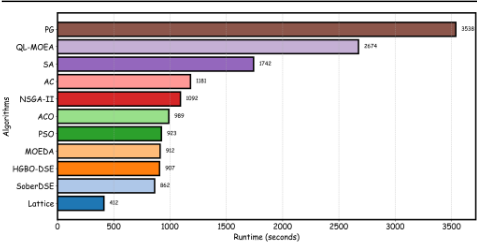

SoberDSE：基于学习的算法选择实现样本高效的设计空间探索
论文针对 HLS 设计空间探索（DSE）中配置空间随 pragma 数量指数增长、且没有任何单一算法能在所有 benchmark 上保持 Pareto 优势（No Free Lunch 定理）的问题，提出以“算法选择”替代设计新算法的路线。SoberDSE 用 LLVM/ProGraML 将 benchmark 源码转为含 HLS 指令信息的特征图，由 GNN 编码器+MLP 的监督模型输出候选算法推荐概率，再以该概率初始化 PPO 强化学习智能体的状态，构成监督+RL 协同推荐模型，从 7 种启发式与 3 种 RL 算法组成的套件中为每个 benchmark 推荐最优算法。实验显示推荐准确率较 RF、XGBoost、K-NN、SVM 等分类模型平均提升 35.57%，ADRS 较 Lattice、HGBO-DSE、MOEDA 分别改善 81.32%、78.61%、83.24%，9 个推理 benchmark 总运行时间 862s、较对比算法最多降低 75.63%。其小样本协同学习与按实例选算法的范式对团队的参数空间探索与验证自动化场景有借鉴价值，但论文面向 FPGA HLS kernel，与团队内存/互连 IP 的 RTL 与验证技术栈不直接重合。
HLS 的 DSE 设计空间随 pragma 指令数量指数增长，且每次 HLS 迭代仿真耗时从分钟到天级，穷举探索不可行；同时受 No Free Lunch 定理约束，实验证明没有任何单一 DSE 算法（启发式或 RL 类）能在所有 benchmark 上始终取得最优 ADRS，因此需要一种能根据 benchmark 特征自动推荐最合适 DSE 算法的机制。
SoberDSE 框架分四部分：(1) Dataset Generator 实现 7 种启发式算法（NSGA-II、SA、ACO、PSO、Lattice、HGBO-DSE、MOEDA）与 3 种 RL 算法（AC、PG、QL-MOEA）的算法套件，在 20 个训练 benchmark 上运行，用预训练 ECoGNN 模型做 QoR 预测并按 ADRS 标注每个 benchmark 的最优算法 ID；(2) Benchmark Feature Graph Generator 用 LLVM 将源码转为 IR，经 ProGraML 生成含 HLS 指令的 BFG 特征图，并按 GNN-DSE 方式插入 icmp 节点补充 pragma 信息；(3) 协同推荐模型：GNN 编码器+MLP/softmax 的监督模型先输出算法推荐概率，该概率与图嵌入拼接构成 PPO 智能体的状态，以 ADRS 性能偏差作为奖励，结合 GAE 与 PPO buffer 训练 actor-critic 网络；(4) 推理时监督与 RL 模型协作推荐算法并执行，得到 Pareto 前沿配置。
较 SOTA 启发式 DSE 算法最高提升 5.7×，较 SOTA 学习型 DSE 方法最高提升 4.2×（摘要）
推荐准确率较 Random Forest、XGBoost、K-NN、SVM 等传统分类模型平均提升 35.57%；去掉 PPO 的纯监督模型（SFM）与基线分类模型准确率相当，说明小样本下监督模型易过拟合
ADRS 指标上取得最低平均值，较 Lattice、HGBO-DSE、MOEDA 分别改善 81.32%、78.61%、83.24%
较 RL 类 DSE 算法 AC、PG、QL-MOEA 分别改善 76.31%、54.81%、75.29%
9 个推理 benchmark 上总运行时间 862s，优于 NSGA-II（1092s）、SA（1742s）、ACO（989s）、PSO（923s）、PG（3538s）、QL-MOEA（2674s），与 MOEDA（912s）、HGBO-DSE（907s）相当，略慢于 Lattice（412s），较这些 DSE 算法运行时间最多降低 75.63%
区别于以往改进 DSE 算法本身（启发式改进如 Lattice/HGBO-DSE/MOEDA，或 RL 探索策略如 IRONMAN-PRO/QL-MOEA）的路线，本文引入 algorithm selection 哲学：不设计新算法，而是基于 benchmark 特征图从现有算法套件中按实例推荐最优算法，以规避 NFL 定理限制；并针对 FPGA benchmark 样本稀缺问题，提出用监督模型输出概率初始化 RL 智能体状态的协同推荐范式，在小样本条件下同时提升推荐准确率与样本效率。
相关度级别：medium
命中能力域：2.7 EDA/验证自动化与 AI 辅助
理由：论文属于 AI 辅助 EDA 自动化（HLS DSE 的学习式算法选择），与 2.7 域“AI 辅助 EDA/验证自动化”的主题相关，上游 catalog 也归入 2.7；但它既非验证流程自动化/CI，也非 LLM 辅助 RTL 生成/验证/bug 分析，且实验对象是 FPGA HLS kernel（MachSuite/Polyhedral benchmark）而非团队的内存/互连 IP RTL 设计与验证技术栈，因此不构成对任何能力域核心技术的直接命中，定为 medium。其可借鉴点在于：按实例选择算法优于设计新算法的范式、小样本下监督+RL 协同训练方法、以及 GNN 设计表征+QoR 预测的快速评估闭环，这些方法学可迁移到团队 IP 配置参数寻优与验证策略选择等自动化场景。
建议动作：作为方法参考存档
arXiv:2603.00986v1 [cs.AR] 1 Mar 2026
汕头大学计算机科学系
中国汕头
{24lxu,sswang,chlxiao}@stu.edu.cn

功耗、性能和面积（PPA）指标。然而，通过设计空间探索（DSE）确定最优参数组合往往需要投入大量时间，因为配置空间会随 pragma 指令数量的增加而呈指数级增长。此外，使用 Vivado HLS 或 Vitis 等商业高层次综合（HLS）工具对每一次高层次设计迭代进行仿真可能需要数分钟乃至数天不等，这使得对复杂设计进行穷举式探索实际上不可行。这一计算瓶颈凸显了对智能 DSE 方法论的需求，此类方法能够在不牺牲解的质量的前提下高效地遍历大型设计空间。
为应对这些挑战，一种有前景的方法是将高层次设计转换为控制与数据流图（CDFG），并利用图表示学习技术提取结构特征，以捕捉原始代码中固有的控制依赖和数据依赖。这使得无需依赖耗时的 HLS 工具仿真即可快速预测延迟和资源利用率等关键性能指标。此外，还采用启发式方法 [2-5] 在庞大的设计空间内高效搜索近优的综合参数，从而在 PPA 目标之间实现动态平衡。例如，如图 1(a) 所示，DSE 算法基于特定的优化目标和基准测试特征开展设计空间探索。该过程首先检查是否满足终止条件，例如最大迭代次数或收敛准则。若满足，则
高层次综合（High-Level Synthesis, HLS）是一项关键的电子设计自动化（Electronic Design Automation, EDA）技术，能够从高级语言描述生成硬件电路。HLS 中的一个关键步骤是设计空间探索（Design Space Exploration, DSE），其目标是在给定约束条件下识别高质量的硬件架构。然而，设计空间的巨大规模使得 DSE 在计算上难以承受。尽管已有大量算法被提出用于加速 DSE，但我们广泛的实验研究表明，没有任何单一算法能够在所有问题实例上持续实现 Pareto 支配。因此，任何单一算法都无法在所有基准测试上占据优势，这就需要一种自动化选择机制来为每个具体案例识别性能最佳的 DSE 算法。为应对这一挑战，我们提出了 SoberDSE 框架，该框架基于基准测试特征推荐合适的算法。实验结果表明，我们的 SoberDSE 框架显著优于最先进的基于启发式的 DSE 算法，提升幅度高达 5.7 倍；同时优于最先进的基于学习的 DSE 方法，提升幅度高达 4.2 倍。此外，与传统分类模型相比，SoberDSE 在小样本学习场景中具有更高的准确率，平均提升 35.57%。代码和模型可在 https://anonymous.4open.science/r/Sober-4377 获取。
高层次综合（HLS）、设计空间探索（DSE）、算法选择、强化学习
Lei Xu、Shanshan Wang 和 Chenglong Xiao †。2026年。SoberDSE：通过基于学习的算法选择实现样本高效的设计空间探索。载于。ACM，美国纽约州纽约市，7页。https://doi.org/10.1145/nnnnnnn. nnnnnnn
高层综合（HLS）工具提供了高层次的抽象接口，帮助硬件设计者开发硬件设计，同时避开底层实现的复杂性 [1]。通过支持在行为级和寄存器传输级进行编程，HLS 显著降低了硬件设计的专业门槛。这些工具还提供了一整套综合参数，包括 #pragma HLS unroll、#pragma HLS pipeline 和 #pragma HLS array_partition，以指导跨
*通讯作者：Chenglong Xiao（chlxiao@stu.edu.cn）。本工作部分受广东省基础与应用基础研究基金（2022A1515110712、2025A1515010272、2023A1515010077）以及广东省高校科学研究项目（2021ZDZX1027）的资助。
则输出 Pareto 近似最优解集。否则，预训练的图神经网络（GNN）模型会提供准确的预测来指导后续的探索迭代，从而形成一个高效的反馈回路，与传统方法相比，在显著缩短探索时间的同时逐步提升解的质量。
然而，正如无免费午餐（NFL）定理 [6] 所确立的，不存在任何单一算法能够在给定的一类优化问题中的所有实例上都取得最优性能。这一基本原理意味着，算法在某一个问题集合上所表现出的任何改进，都不可避免地会被其在另一个问题集合上的性能下降所抵消。设计空间探索（DSE）是一项多目标优化任务，需要在功耗、延迟和资源利用率等相互冲突的指标之间进行权衡，先前的研究已采用多种方法来解决这一任务，包括启发式算法和基于强化学习（RL）的方法。尽管如此，与 NFL 定理相一致，这些算法中没有任何一个被证明能够在所有实例上始终优于其他所有算法。如图 1(b) 所示，我们使用四种启发式算法——非支配排序遗传算法 II（NSGA-II）[2]、模拟退火算法（SA）[3]、蚁群优化（ACO）[4] 和粒子群优化（PSO）[5]——在包括 2mm、3mm、atax、bicg 和 bicg-large 在内的基准测试上进行 DSE，并以到参考集的平均距离（ADRS）作为性能指标（数值越低表示性能越好）。结果表明，SA 在 2mm 和 atax 上表现最佳，而在其余基准测试上则由不同算法胜出。这些实验结果证实，没有任何 DSE 算法能够在所有基准测试上都取得最优表现，这凸显了建立一个能够根据具体情况推荐最合适算法的自动化系统的必要性。
为了解决这一问题，我们提出了 SoberDSE，这是一个融合了算法选择概念的框架，能够根据每个基准测试的特征自动为其推荐合适的算法。我们的主要贡献如下：
基于启发式的设计空间探索。基于启发式的设计空间探索已被证明能够有效求解多目标优化问题。先前利用 NSGA-II [2]、SA [3] 和 ACO [4] 等启发式算法的工作已经实现了高效的设计空间探索。为了解决传统启发式算法容易陷入局部最优的问题，Lattice-Traversing [7] 将基于 Pareto 邻域的选择策略与随机选择策略相结合，有效平衡了探索与利用。为了克服传统启发式算法收敛速度慢和超参数敏感的问题，HGBO-DSE [8] 采用贝叶斯优化有效化解了这些挑战。此外，MOEDA [9] 将设计空间探索问题分解为若干子问题，并使用多目标进化算法逐一求解，从而识别出更优的 Pareto 前沿。
基于强化学习（RL）的设计空间探索。基于启发式的设计空间探索的性能受到两方面制约：算法无法适应特定基准测试的特征，且依赖僵化、非自适应的搜索策略。相比之下，IRONMAN-PRO [10] 将 Actor-Critic（AC）与 Policy Gradient（PG）相结合，提出了 RLMD 方法，该方法能够自适应地利用基准测试特征，并采用灵活的探索策略进行设计空间探索。这使得 RLMD 相比传统基于启发式的方法能够发现更优的 Pareto 前沿。QL-MOEA [11] 针对进化算法在自主选择探索策略方面的固有局限对其进行了增强。它在搜索过程中智能地平衡探索与利用之间的权衡，从而实现对设计空间更彻底、更高效的探索。
算法选择（algorithm selection）理念在多目标优化领域得到了广泛应用，它表明复杂的算法设计并非实现进一步优化的唯一途径。根据给定问题实例的特征推荐潜在最优的算法显然更为高效。对于一个多目标优化问题 P，算法选择框架可以形式化表述如下 [12]：给定问题 P 的实例集合 I、候选算法集合 A = { 𝐴 1 , . . . , 𝐴 𝑛 }，以及用于度量任意算法 𝐴 𝑖 ∈ A 在实例集合 I 上性能的目标优化度量 𝑚 : A×I，目标是构建一个算法选择器 S，将每个问题实例 𝑗 ∈ I 映射到某个算法 S( 𝑗 ) ∈ A，使得 S 在 I 上的整体性能依据度量 𝑚 达到最优。
在本工作中，我们提出利用算法选择的思想来识别针对特定基准量身定制的高性能设计空间探索（DSE）算法。据此，我们将该问题表述为以下两个子问题：
问题 1：构建算法选择模型。对于使用类 C 高级语言描述的 FPGA 加速器内核（基准）𝐵，其设计空间记为 𝐼。该场景涉及用于 DSE 的候选算法集合 A、优化目标 ADRS，以及预训练的结果质量（QoR）预测模型 𝑃𝑀。针对优化目标 ADRS，我们利用集合 A 中的候选算法对基准 𝐵 进行探索。在此探索过程中发现的设计配置 𝑑𝑐 ∈ 𝐼 随后使用预训练模型 𝑃𝑚 进行评估，最终得到每个算法 A𝑘 ∈ A 在基准 𝐵 上的性能结果 H(𝐵)。目标是找到一个算法推荐函数 F，使其能够对任意给定的基准 𝐵 和任意设计空间 𝐼 逼近 H(𝐵)𝑚𝑖𝑛 : 𝑚𝑖𝑛(H(𝐵))：
其中 H(𝐵)′ 是函数 F 生成的近似值。问题 2：识别帕累托前沿配置。对于上文定义的基准 𝐵、设计空间 𝐼 和函数 F，F 根据基准 𝐵 的特性推荐一个潜在最优的算法 A𝑏𝑒𝑠𝑡 ∈ A，用于搜索帕累托前沿配置 𝑃𝑓。帕累托前沿 𝑃𝑓 的定义如下：
其中 𝑑𝑃𝑓 ∈ 𝑃𝑓，𝑑𝐼 ∈ 𝐼，且 𝑃𝑓 ⊆ 𝐼。函数 a(·) 和 l(·) 表示 𝑑𝑃𝑓 和 𝑑𝐼 的资源利用率和延迟。
如图 2 所示，我们提出的 SoberDSE 框架首先通过数据集生成器（Dataset Generator，A）生成训练与推理数据。我们首先实现了一个由七种启发式算法和三种强化学习（RL）方法组成的设计空间探索（DSE）算法套件。基准被划分为训练集和推理集，并记录所有 DSE 算法在每个基准上的性能，以确定每个基准的最优算法。随后，基准特征图生成器（Benchmark Feature Graph Generator，B）为每个基准构建特征图。监督推荐模型（C）先经过训练，随后用于通过估计算法选择概率来初始化 RL 推荐模型（D）中智能体的状态。智能体基于真实最优算法 ID 与环境进行交互，并从存储在缓冲区中的经验中学习。在推理（E）阶段，SoberDSE 在由数据集生成器（A）生成的推理数据集上进行评估。预训练的监督推荐模型与 RL 推荐模型（B 和 C）协同推荐算法，这些算法在相应的基准上执行，以识别更优的帕累托前沿。
为构建用于设计空间探索（DSE）算法推荐的数据集，如图 2 的 ( A ) 部分所示，我们首先实现了一个 DSE 算法套件，其中包含七种启发式算法（NSGA-II、SA、ACO、PSO、Lattice、HGBO-DSE 和 MOEDA）以及三种强化学习（RL）算法（AC、PG 和 QL-MOEA）。这些算法在表 1 所列的二十个基准上执行，所探索的设计配置则使用预训练的 ECoGNN [15] 模型进行结果质量（QoR）预测来评估。用于训练 ECoGNN 的基准与用于训练 DSE 算法推荐模型的基准完全分离。为评估 DSE 算法的性能，我们采用 ADRS 作为评估指标：
其中 Γ 表示参考帕累托最优集，Ω 表示近似帕累托最优集，函数 𝑓 计算 𝜆 与 𝜇 之间的距离。DSE 算法套件中十种算法的平均性能被用作计算 ADRS 指标的参考集。最后，我们为每个基准确定实现最优性能（最低 ADRS 值）的算法 ID，该 ID 作为后续推荐模型的训练与推理目标。
| Benchmarks | Functions | DS | ||
|---|---|---|---|---|
| MachSuite [13] | MachSuite [13] | MachSuite [13] | ||
| gemm-blocked O(n3) algorithm for dense matrix multiplication. | gemm-blocked O(n3) algorithm for dense matrix multiplication. | 2,314 | ||
| gemm-ncubed | Blocked version of matrix multiplication. | 7,152 | ||
| Polyhedral [14] | Polyhedral [14] | Polyhedral [14] | ||
| atax | Matrix Transpose and Vector Multiplication. | 2,644 | ||
| bicg | BiCG Sub Kernel of BiCGStab Linear Solver. | 1054 | ||
| bicg-large | BiCG Sub Kernel of BiCGStab Linear Solver. | 2,975 | ||
| covariance | Covariance Computation. | 970,967,172 | ||
| fdtd-2d | 2-D Finite Different Time Domain Kernel. | 18,329,692,529 | ||
| fdtd-2d-large | 2-D Finite Different Time Domain Kernel. | 70,303,226,437 | ||
| gemm-p | Matrix-multiply. | 409,905 | ||
| gemm-p-large | Matrix-multiply. | 690,641 | ||
| gemver | Vector Multiplication and Matrix Addition. | 100,977,795,072 | ||
| gesummv | Scalar, Vector and Matrix Multiplication. | 1,543 | ||
| heat-3d | Heat equation over 3D data domain. | 71,511 | ||
| jacobi-1d | 1-D Jacobi stencil computation. | 2,871 | ||
| mvt-medium | Matrix Vector Product and Transpose. | 933,156 | ||
| syr2k | Symmetric rank-2k update. | 340,234 | ||
| symm | Symmetric matrix-multiply. | 50,265 | ||
| trmm | Triangular matrix-multiply. | 43,463 | ||
| trmm-opt | Triangular matrix-multiply. | 50,265 | ||
| 2mm | 2 Matrix Multiplications | 492,787,501 | ||
| 3mm | 3 Matrix Multiplications | 17,658,216,447,701 |
| Benchmarks | Functions | |DS| |
如第 3.1 节和第 3.2 节所述，尽管推荐模型会基于训练数据更新其参数和偏置以选择算法 ID，但基准通常以高级语言表示，这使得难以完整捕获其特征属性，而这对推荐算法的准确性至关重要。为解决这一问题，我们提出了基准特征图生成器（Benchmark Features Graph Generator, BFGG）（B），其利用生成控制数据流图（CDFG）的方法，以特征图（BFG）的形式表示基准。如图 3 所示，基准的源代码首先使用 LLVM 转换为中间表示（intermediate representation, IR），随后通过 ProGraML [16] 生成 BFG，其中融合了高层次综合（HLS）指令以增强语义表示。与此同时，遵循 GNN-DSE [17] 的方法，pragma 插入器构建 icmp 节点，以 pragma 特定信息对 BFG 进行增强。
Due to the reconfigurable hardware nature of FPGA accelerator kernels (benchmarks), the number of real-world benchmarks is inherently limited, which consequently restricts the number of benchmarks available for our use. As a result, the data samples obtained Target id from the Dataset Generator ( A ) are constrained in quantity. Treating algorithm recommendation solely as a classification problem using supervised learning may lead to overfitting and poor generalization. An alternative approach involves reinforcement learning, where an agent continuously interacts with the environment to recommend optimal algorithms. However, under limited sample constraints, this method still suffers from low sample efficiency and local optima convergence. To address these issues, we propose a collaborative recommendation paradigm where algorithm IDs generated by a pre-trained supervised model initialize the RL agent's state, effectively mitigating the aforementioned limitations.


As shown in Supervised Recommendation Model ( C ) of Figure 2, we first encode the BFG provided in BFGG ( B ) using a pre-trained GNNencoder [15] to obtain the graph representation ℎ G . The GNN encoder employed here corresponds to the encoder component of the QoR prediction model. This encoding process can be formulated as:
Then, we set up an MLP head to decode ℎ G and add a softmax layer to output the recommendation probability for each algorithm. This process can be formalized as:
where 𝑊 1 , 𝑊 2 , 𝑏 1 and 𝑏 2 are the parameter of MLP head, 𝐴 is the set of DSE algorithms. We employ the Cross-Entropy loss [18] to compute the discrepancy between the algorithm ID recommended by the supervised model and the ground-truth best-performing algorithm ID during training.
After a brief training period, we save the parameters of the supervised model and transmit its final output recommendation probabilities 𝑝 𝑠𝑢𝑝 to the RL recommendation model. Since the limited sample size, we employ the PPO algorithm [19] as our reinforcement learning approach due to its high sample efficiency and training stability. As shown in RL Recommendation Model ( D ) of Figure 2, The PPO agent operates in the environment where the state representation 𝑠 𝑡 = [ ℎ 𝐺 ; 𝑝 𝑠𝑢𝑝 ] combines graph embeddings
ℎ G from the GNN encoder and prior probabilities 𝑝 𝑠𝑢𝑝 from the supervised model. To enable interaction with the environment, the PPO agent incorporates two trainable neural networks: an actor network and a critic network. The actor network selects algorithm 𝑎 𝑡 ∈ 𝐴 based on the current state 𝑠 𝑡 :
where 𝑀𝐿𝑃 𝑎 is used to approximate the probability distribution of algorithm recommendations 𝑝 ( 𝑎 𝑡 | 𝑠 𝑡 ) . The critic network estimates state values for advantage calculation:
where 𝑀𝐿𝑃 𝑎 is used to calculate state values. The environment provides rewards 𝑟 𝑡 based on performance deviation:
其中 𝑚 ( 𝑎 𝑡 ) 表示算法 𝑎 𝑡 的 ADRS 值，¯ 𝑚 表示在相应基准上表现最优的算法的 ADRS 值。PPO 缓冲区是训练流程中的关键组件，它促进智能体与环境之间的交互，同时支持稳定的策略更新。
在每个回合（episode）中，智能体通过基于当前状态 𝑠 𝑡 选择动作 𝑎 𝑡、接收奖励 𝑟 𝑡 并观察状态转移来与环境进行交互。这些经验 ( 𝑠 𝑡 , 𝑎 𝑡 , 𝑟 𝑡 , 𝑠 𝑡 + 1 , 𝑙𝑜𝑔 ( 𝜋 𝜃 ( 𝑎 𝑡 | 𝑠 𝑡 )) , 𝑉 𝜙 ( 𝑠 𝑡 ) ) 被存储在 PPO 缓冲区中。回合结束后，缓冲区为策略优化提供完整的轨迹数据。更新过程包括使用广义优势估计（Generalized Advantage Estimation, GAE）[20] 计算优势：
其中 𝛿 𝑡 = 𝑟 𝑡 + 𝛾𝑉 ( 𝑠 𝑡 + 1 ) - 𝑉 ( 𝑠 𝑡 ) ，𝛾 和 𝜆 是 GAE 的超参数。随后，通过最小化 PPO 目标函数来更新智能体：
其中 L 𝑝𝑜𝑙𝑖𝑐𝑦 是裁剪策略梯度损失，它在鼓励策略改进的同时约束更新幅度，以防止策略发生剧烈变化；L 𝑣𝑎𝑙𝑢𝑒 是价值函数损失，用于训练 critic 网络以准确估计状态价值；L 𝑒𝑛𝑡𝑟𝑜𝑝𝑦 是熵奖励，通过增加策略的随机性来鼓励探索；𝑐 1 和 𝑐 2 是超参数。

| Benchmarks | Functions | DS | ||
|---|---|---|---|---|
| MachSuite [13] | MachSuite [13] | MachSuite [13] | ||
| nw | A dynamic programming algorithm. | 15,288 | ||
| stencil | A two-dimensional stencil computation. | 7,591 | ||
| Polyhedral [14] | Polyhedral [14] | Polyhedral [14] | ||
| atax-medium | Matrix Transpose and Vector Multiplication. | 9,454 | ||
| bicg-medium | BiCG Sub Kernel of BiCGStab Linear Solver. | 19,536 | ||
| correlation | Correlation Computation. | 513,641,633,988 | ||
| jacobi-2d | 2-D Jacobi stencil computation. | 7,609,187 | ||
| mvt | Matrix Vector Product and Transpose. | 2,385,796 | ||
| symm-opt | Symmetric matrix-multiply. | 730,665 | ||
| syrk | Symmetric rank-k update. | 340,234 |
| Benchmarks | Functions | |DS| |
通过训练 PPO 智能体并保存其参数，我们按照图 2 中 Inference（E）部分所示对所提出的推荐模型进行评估。首先，将来自推理数据集的基准特征图输入预训练的监督推荐模型，以生成初始的算法推荐概率。随后，RL 推荐模型整合该概率，推荐潜在最优的 DSE 算法，并返回该算法在相应基准上获得的 Pareto 前沿。
如第 4.1 节所述，我们构建了用于训练和评估所提出的 SoberDSE 框架的数据集。训练集包含表 1 中列出的 20 个基准测试。如表 2 所示，推理数据集包含 9 个来自 MachSuite [13] 和 Polyhedral [14] 的基准测试，在设计空间规模上表现出显著的多样性，其中包括千亿级规模的基准测试（correlation）。用于算法推荐的基准测试与用于 QoR 预测模型训练的基准测试完全独立。此外，我们进行比较的主要方法包括七种启发式算法（NSGA-II [2]、SA [3]、ACO [4]、PSO [5]、Lattice [7]、HGBO-DSE [8] 和 MOEDA [9]）以及三种强化学习算法（采用 AC 和 PG 的 IRONMAN-PRO [10]，以及 QL-MOEA [11]）。监督模型采用 256 的隐藏层维度、0.0003 的学习率和 250 个训练轮次，而强化学习模型则使用 256 的隐藏层维度、0.0005 的学习率和 1000 个训练轮次。所有实验均在频率为 250MHz 的 Xilinx Alveo U200 FPGA 上执行。所有 DSE 算法均使用 Python 实现，SoberDSE 框架则使用 PyTorch 开发和训练。

We utilize the trained Sober(( C ) and ( D )) to perform algorithm recommendations on the inference benchmarks following the Inference ( E ) workflow illustrated in Figure 2. To validate the Recommendation accuracy (percentage of correct recommendations relative to the total number of samples) of our proposed algorithm, we conduct comparative evaluations of Sober and against classification methods including Random Forest (RF) [21], XGBoost [22], K-NN [23], and SVM [24]. Furthermore, to validate the importance of the PPO component, we conduct experiments using only the Supervised recommendation model (SFM) for algorithm recommendation and recorded the results. As shown in Figure 4, our proposed Sober recommendation model demonstrates significantly more accurate algorithm recommendations compared to traditional classification models, achieving an average improvement of 35.57%. In contrast, the SFM without the PPO component shows comparable accuracy to baseline models, indicating the limited performance of supervised models on small-sample problems and their susceptibility to overfitting. Sober effectively addresses the overfitting issue in supervised learning by integrating reinforcement learning. Additionally, by initializing the RL recommendation model's state with probabilities from the supervised model, Sober enhances the sample efficiency of the RL recommendation process.
We evaluate the algorithms recommended by Sober (( C ) and ( D )) on the benchmarks listed in Table 2 using the ADRS metric, comparing primarily with heuristic techniques including NSGA-II, SA, ACO, PSO, Lattice, HGBO-DSE, and MOEDA. Since our approach
| Benchmarks | NSGA-II[2] | SA[3] | ACO[4] | PSO[5] | Lattice[7] | HGBO-DSE[8] | MOEDA[9] | SoberDSE(Our Work) |
|---|---|---|---|---|---|---|---|---|
| nw | 0.0275 | 0.0275 | 0.0596 | 0.0275 | 0.0019 | 0.0122 | 0.0282 | 0.0046 |
| stencil | 0.0896 | 0.0896 | 0.187 | 0.2167 | 0.3105 | 0.4714 | 0.1551 | 0.0189 |
| atax-medium | 0.0638 | 0.0219 | 0.0564 | 0.0219 | 0.0715 | 0.0328 | 0.0913 | 0.0171 |
| bicg-medium | 0.1043 | 0.1043 | 0.065 | 0.1778 | 0.1043 | 0.0401 | 0.1125 | 0.0256 |
| correlation | 0.1726 | 0.0608 | 0.2692 | 0.1287 | 0.0185 | 0.0142 | 0.1419 | 0.0145 |
| jacobi-2d | 0.2215 | 0.1245 | 0.275 | 0.22 | 0.2537 | 0.0153 | 0.1023 | 0.0188 |
| mvt | 0.3017 | 0.1787 | 0.1924 | 0.0595 | 0.0337 | 0.0688 | 0.1151 | 0.0258 |
| symm-opt | 0.1555 | 0.0649 | 0.0649 | 0.0526 | 0.0274 | 0.0334 | 0.0777 | 0.0205 |
| syrk | 0.1144 | 0.0833 | 0.1885 | 0.0516 | 0.0072 | 0.0358 | 0.0991 | 0.0091 |
| Avg | 0.139 | 0.0839 | 0.1509 | 0.1063 | 0.0921 | 0.0804 | 0.1026 | 0.0172 |
| Benchmarks | NSGA-II[2] | SA[3] | ACO[4] | PSO[5] | Lattice[7] | HGBO-DSE[8] | MOEDA[9] | SoberDSE(Our Work) |
81.32% 78.61% 83.24%

involves algorithm recommendation followed by executing the recommended algorithm on the corresponding benchmark, the results maycoincide with one of the comparative algorithms. However, due to the stochastic nature of exploratory algorithms, different runs may produce non-deterministic outcomes. Experimental results in Table 3 show that SoberDSE achieves the lowest average ADRS, outperforming the SOTA DSE heuristic algorithms Lattice, HGBODSE, and MOEDA by 81.32%, 78.61%, and 83.24%, respectively. This demonstrates that the algorithm selection strategy effectively mitigates the limitations of the NFL theorem, enabling SoberDSE to deliver superior overall performance across all benchmarks by recommending the potentially optimal algorithm for each case. Additionally, we also compare with SOTA DSE RL algorithms including IRONMAN-PRO (AC and PG) and QL-MOEA. As shown in Figure 5, darker blue shades indicate better algorithm performance on corresponding benchmarks. Experimental results demonstrate that our proposed SoberDSE outperforms SOTA DSE RL algorithms, achieving the best average performance across all benchmarks. Specifically, SoberDSE improves over AC by 76.31%, PG by 54.81%, and QL-MOEA by 75.29%. The stable and superior exploration capability of SoberDSE confirms the feasibility of using algorithm selection to address DSE optimization challenges.
在实验中，我们还比较了 SoberDSE 与所有算法的运行时间。如图 6 所示，SoberDSE 在表 2 中提到的 9 个基准测试上展现出显著的运行时间优势，总运行时间为 862s。其优于大多数其他算法，包括 NSGA-II（1092s）、SA（1742s）、ACO（989s）、PSO（923s）、PG（3538s）和 QL-MOEA（2674s）。虽然与 MOEDA（912s）和 HGBO-DSE（907s）相比仍具竞争力，但其略慢于 Lattice（412s）。与这些设计空间探索（DSE）算法相比，运行时间最多可减少 75.63%。这表明 SoberDSE 在与其他基线算法相比取得更优性能的同时，所需的计算时间相对更少。
综上所述，基于 5.2-5.4 节的评估，我们提出的 SoberDSE 方法比传统分类模型取得了更高的推荐准确率，并以相对较低的时间开销超越了最先进（SOTA）的 DSE 算法。这些结果表明，应对 DSE 挑战不必仅仅依赖于设计新算法，还可以通过基于基准测试特征从现有算法套件中推荐合适的算法来实现，从而获得整体最优性能。这种范式转变为从零开始设计新算法提供了一种强有力的替代方案。
我们提出了 SoberDSE，这是一种自动化算法选择框架，它提取基准测试特征，并从一套 DSE 工具中选择最优算法。为了在样本有限的情况下实现高效选择，我们引入了一种结合监督学习与强化学习的混合推荐模型，其性能显著优于传统分类器。在样本有限的条件下，SoberDSE 相比最先进的启发式模型和强化学习模型取得了更优的性能，而所需时间仅为后者的一小部分。这项工作为 DSE 优化挑战提供了一种全新的视角。未来的研究将扩展算法套件，并在更多基准测试上训练 SoberDSE，以进一步提升其性能。